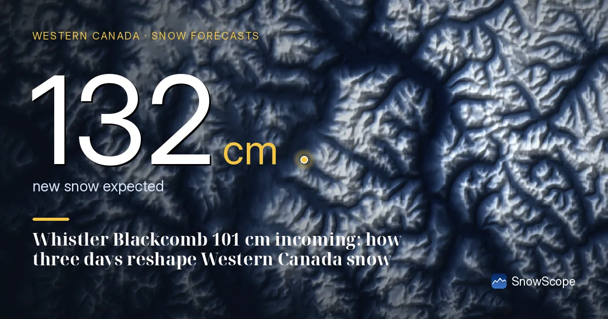

Whistler Blackcomb 101 cm incoming: how three days reshape Western Canada snow
Three days of heavy snow will transform Western Canada's snowpack, with Whistler Blackcomb receiving 101 cm by November 25—more than the typical depth at mid-height right now. Mount Cain Alpine Park will get even more: 132 cm, while most lower resorts struggle with the thin early-season base.
See the live snow forecast for Whistler Blackcomb in the SnowScope appSnow depth, powder alerts and the 3D map, free.
Where the most snow falls
Mount Cain Alpine Park wins the next forecast period with 132 cm new snow by November 25. This is not typical for late November: the mid-height sits at only 25 cm today, so the incoming snow will roughly triple the existing depth. Whistler Blackcomb, the region's established snow leader, will receive 101 cm at the same time—substantial, but 31 cm less than Mount Cain. At Whistler's mid-height (1456 m), 51 cm lies on the ground now; the new snow will bury rocks that are still near the surface.
Mount Washington Alpine Resort and Ski Callaghan will see less. Mount Washington gets 121 cm by November 25, mostly falling on November 24. Ski Callaghan, lower and further inland, receives only 54 cm. These numbers show a clear pattern: exposed, higher terrain catches the most; sheltered or lower valleys miss the main event.
| Resort | Snow depth | New snow, 72 h | Coming, next days | Top |
|---|---|---|---|---|
| Mount Cain Alpine Park | 92 cm | 2 cm | 132 cm | 1,616 m |
| Mount Washington Alpine Resort | 73 cm | 9 cm | 121 cm | 1,569 m |
| Whistler Blackcomb | 153 cm | 5 cm | 101 cm | 2,259 m |
| Ski Callaghan | 16 cm | 3 cm | 54 cm | 998 m |
| Grouse Mountain | 9 cm | 5 cm | 32 cm | 1,228 m |

Height matters: upper slopes win big
At Mount Cain's summit (1616 m), SnowScope shows 103 cm of new snow in the next seven days. At the base (1190 m), only 65 cm falls—a 38 cm gap. This is the classic winter storm: upper slopes collect; lower slopes lose snow to wind and to warmer air. The freezing level moves between 620 m and 1100 m over the forecast period, so the base will see rain mixed in on the warmest day (November 24).
Whistler's pattern is steeper still. The summit (2259 m) will gain 116 cm; the base (653 m) barely 11 cm. At mid-height (1456 m), expect 96 cm. This height separation is why upper-mountain terrain will be skiable within days, while lower runs remain thin or exposed.
The heaviest day: November 24
November 24 is the standout. Mount Cain receives 68 cm that day alone—more than half its three-day total. Whistler gets 40 cm, Mount Washington 76 cm. This is when the system sits over the region and squeezes hardest. By contrast, November 23 is lighter across all resorts; November 25 wraps up with moderate falls as the low moves away.
On November 24, the freezing level at Whistler jumps to 1170–1490 m—a warning sign for lower runs. At Mount Washington it reaches 740–1260 m. This warm-air surge means the heaviest snowfall will be on wetter, heavier snow at mid-height and rain at lower elevations. Upper slopes will see drier, fluffier snow.
How this compares to normal and to recent winters
Mount Cain's mid-height (1403 m) holds 25 cm today; on this date in past winters, the median was 59 cm. We are 34 cm below normal—thin for late November. The incoming 86 cm at this height will overshoot the November norm and move the site above the 32nd percentile of past seasons, though still not deep by winter standards.
Whistler at mid-height (1456 m) sits at 51 cm today versus a typical 124 cm—nearly 73 cm short. The region is running weak for the season. The next 96 cm of snow will help, but Whistler will still finish below the median by the November 25 snapshot. Early-season snow is always thin; this forecast does not erase that reality.
Practical takeaway for the field
Three days of substantial snow will create skier-ready conditions on upper slopes at Whistler, Mount Cain, and Mount Washington by November 26. Rock hazards will shrink but not vanish, especially below 1200 m. Lower resorts like Grouse Mountain and Ski Callaghan will remain marginal—new snow helps, but the base is too thin for safe, fun skiing.
Watch the freezing level on November 24. At Whistler it rises to 1170 m; at Mount Washington, 740 m. This means wet snow and rain below those heights. Upper-mountain riding will be faster. Expect wind work on exposed ridges after the snow arrives; fresh powder does not last long in coastal mountains.
Tips for skiers
- Head to Mount Cain Alpine Park or upper Whistler (above 1600 m) on November 25–26 to ski the freshest snow; lower runs will be wetter or still thin.
- On November 24, the heaviest snowfall day, avoid lower elevations where rain is likely. Upper slopes at Whistler (above 1200 m) will see snow all day.
- Rock hazards remain near the surface at Ski Callaghan, Grouse Mountain, and Mount Washington base areas even after the new snow. probe or ride with local knowledge.
- Wind will scour ridges after snow stops. Sheltered gullies and leeward aspects hold deeper, fresher snow longer.
- Check the official avalanche bulletin before touring off-piste; fresh snow on steep slopes carries burial risk, especially where wet snow sits above frozen ground.
About these numbers
Resort snow depths are the deepest snow on the resort's upper slopes on the date shown; they are estimates for an area, not a measurement at one point. Forecasts can change. Always read the official avalanche bulletin before going off-piste.
Official avalanche bulletins: Avalanche Canada
Cite this report
For research, teaching or the press: the numbers and charts are free to reuse under CC BY 4.0 with this citation.
SnowScope (2026), Whistler Blackcomb 101 cm incoming: how three days reshape Western Canada snow, https://snowscope.app/blog/en/2026/11/western-canada-whistler-blackcomb-snow-forecast-22-november-2026.html, accessed 2026-11-22
SnowScope (Atlas Labs). (2026, November 22). Whistler Blackcomb 101 cm incoming: how three days reshape Western Canada snow. SnowScope snow reports. https://snowscope.app/blog/en/2026/11/western-canada-whistler-blackcomb-snow-forecast-22-november-2026.html
BibTeX
@misc{snowscope2026westerncanadawhistlerbla,
author = {{SnowScope (Atlas Labs)}},
title = {Whistler Blackcomb 101 cm incoming: how three days reshape Western Canada snow},
year = {2026},
month = nov,
howpublished = {\url{https://snowscope.app/blog/en/2026/11/western-canada-whistler-blackcomb-snow-forecast-22-november-2026.html}},
note = {Published 2026-11-23 09:01 UTC; accessed 2026-11-22}
}· CC BY 4.0 · Methods, data and tools →
Whistler Blackcomb: snow and temperature by height, this winter vs last (tools) →
Follow Whistler Blackcomb
Free: a message when fresh snow is coming, and the forecast every morning.
More snow reports

Whistler Blackcomb has 136 cm on upper slopes this weekend, but snow thins fast below 1500 m. Plan runs by elevation. Data from 19 November.

150 cm on the upper slopes: that is why Whistler Blackcomb heads our list. Snow on the ground, snow from the last 72 hours, snow still to come: …

Whistler Blackcomb leads Western Canada with 153 cm on upper slopes. Snow covers 398,620 km² across 52 of 57 resorts on 22 November.